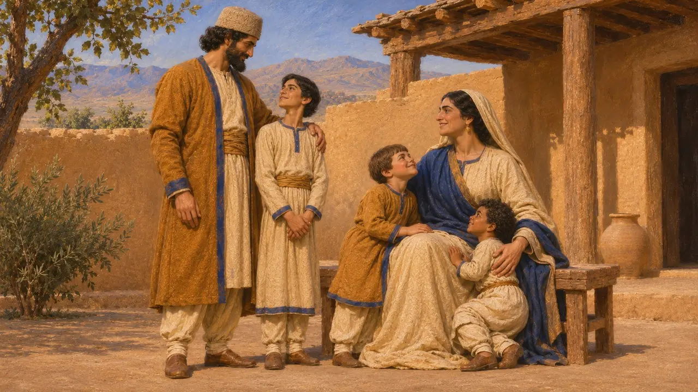
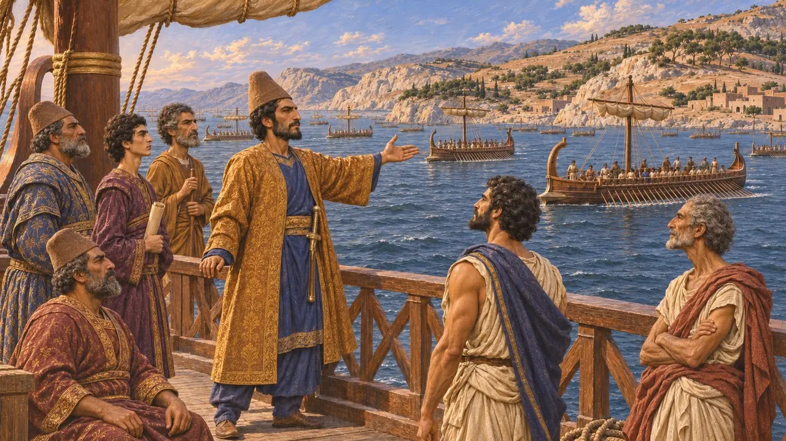
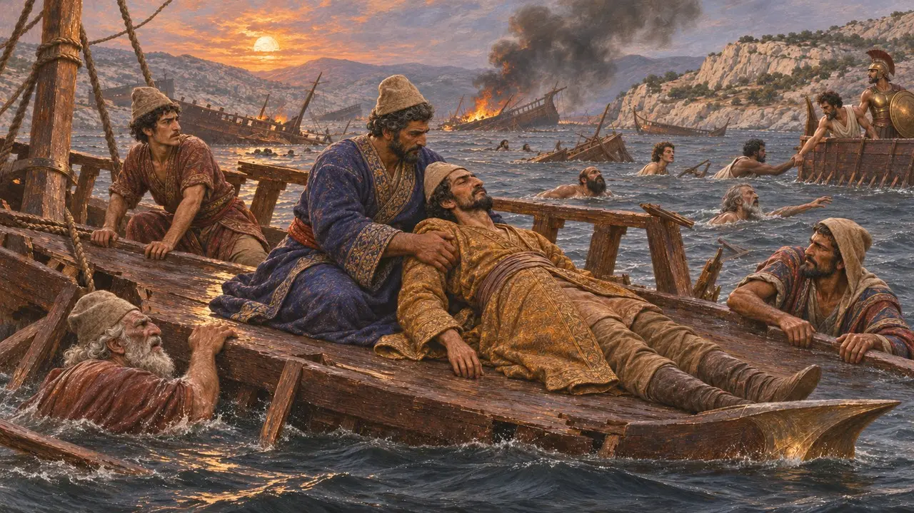
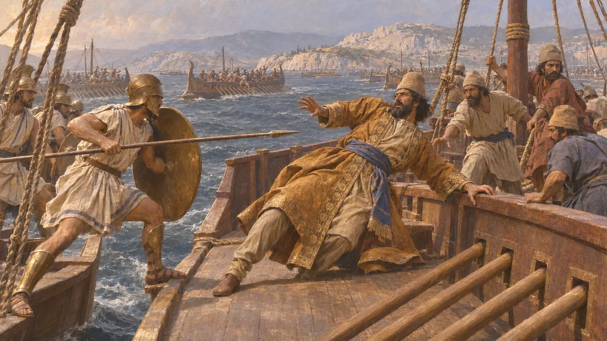
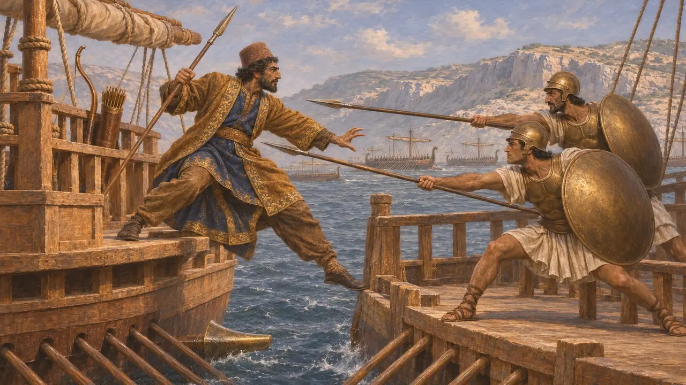

Ariabigne
Principe persiano e ammiraglio della flotta di Serse, ucciso a Salamina nel 480 a.C.
Ariabigne era figlio di Dario il Grande e della figlia di Gobria, il che lo rendeva fratellastro maggiore di Serse. Nel 480 a.C. comandò le squadre ionie e carie della flotta del Re e morì nella battaglia navale di Salamina: un principe reale, tra gli uomini di più alto rango a cadervi. Quasi tutto ciò che si sa di lui proviene da poche righe di Erodoto.
Nel gioco: La cronaca del gioco lo descrive come il fratellastro di Serse che guidò le navi ionie e carie e morì a Salamina, in accordo con Erodoto. Salamina in sé non è uno dei livelli del gioco.

Un figlio nato prima dell'ascesa al trono
Racconto anticoErodoto racconta che Dario, prima di diventare re nel 522 a.C., sposò una figlia del nobile Gobria, suo pari, e ne ebbe tre figli, il maggiore dei quali era Artobazane. Erodoto indica Ariabigne come figlio di Dario e della figlia di Gobria: era dunque più anziano di Serse, la cui madre era Atossa, figlia di Ciro. Essendo nati prima dell'ascesa al trono, questi figli furono scavalcati quando Serse venne scelto come erede.
Herodotus 7.2; Herodotus 7.97

Ammiraglio delle navi ionie e carie
Racconto anticoNella sua rassegna delle forze di Serse, Erodoto elenca quattro ammiragli: Ariabigne, Pressaspe figlio di Aspatine, Megabazo figlio di Megabate e Achemene, un altro figlio di Dario, che guidava le navi egizie. Ariabigne aveva il comando dei contingenti ioni e cari, sudditi del Re sulla costa egea dell'Anatolia. Erodoto conta 1.207 triremi nell'intera flotta, una cifra che la maggior parte degli storici ritiene eccessiva.
Herodotus 7.89; Herodotus 7.97

Morte a Salamina
Racconto anticoErodoto riferisce che Ariabigne, figlio di Dario e fratello di Serse, cadde nei combattimenti di Salamina nel 480 a.C., insieme a molti altri illustri Persiani, Medi e alleati. Aggiunge che morirono pochi Greci perché per lo più sapevano nuotare, mentre molti dalla parte del Re annegarono quando le loro navi andarono perdute. Non fornisce dettagli su come cadde lo stesso Ariabigne.
Herodotus 8.89

Ariabigne o Ariamene
ContesoPlutarco, che scrive circa sei secoli dopo, chiama Ariamene l'ammiraglio persiano ucciso a Salamina e lo dice fratello di Serse. La maggior parte degli studiosi lo identifica con l'Ariabigne di Erodoto, ma il nome è diverso e l'identificazione non si può dimostrare. Nessun documento persiano finora pubblicato gli è stato attribuito con sicurezza, e nemmeno i comandanti caduti nominati nei Persiani di Eschilo possono essergli ricondotti con certezza.
Plutarch, Themistocles 14; P. Briant, From Cyrus to Alexander, 2002

L'ammiraglio sulla grande nave
Leggenda posteriorePlutarco narra che Ariamene combatteva da una grande nave, scagliando frecce e giavellotti come dalle mura di una città. Quando la sua nave si scontrò con quella di due Ateniesi, Aminia di Decelea e Socle di Pallene, tentò di abbordarli, ed essi lo colpirono con le lance e lo gettarono in mare. Plutarco afferma che Artemisia di Alicarnasso riconobbe il suo corpo tra i relitti e lo fece portare a Serse. La scena non compare in Erodoto.
Plutarch, Themistocles 14
Fonti
- Herodotus 7.97
- Herodotus 8.89
- Herodotus 7.2
- Plutarch, Themistocles 14
- P. Briant, From Cyrus to Alexander, 2002
- Aeschylus, Persians